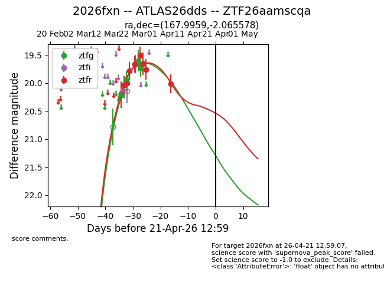
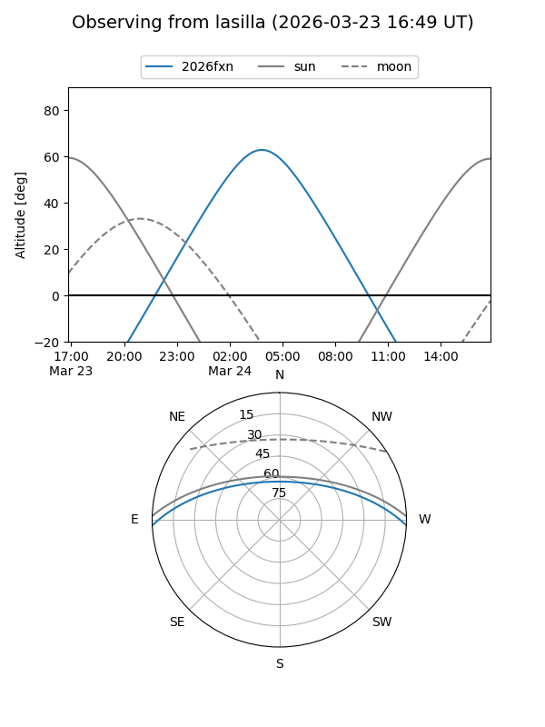
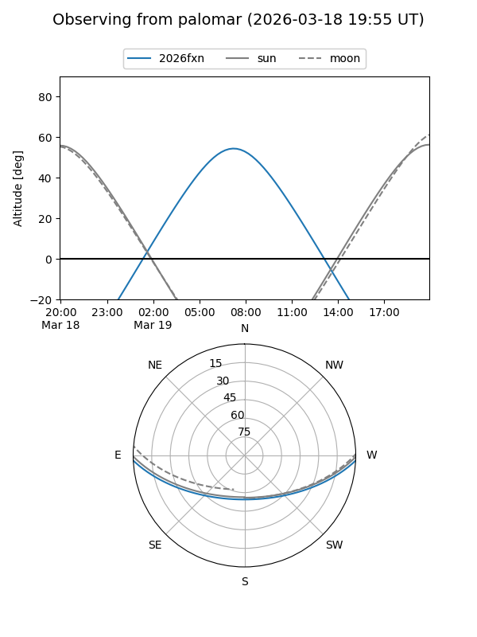
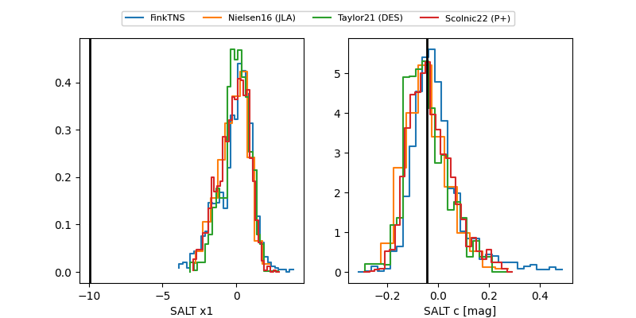

2026fxn
Target 2026fxn at 2026-04-21 13:03
Aliases and brokers:
FINK: link
Lasair: link
ALeRCE: link
TNS: link
YSE: link
alt names
ZTF26aamscqa (ztf,fink_ztf)
2026fxn (tns,yse)
ATLAS26dds (atlas)
Coordinates:
equatorial (ra, dec) = 167.9959,-2.06558
equatorial (HMS+DMS) = 11:11:59.01,-02:03:56.08
galactic (l, b) = (259.6087,+52.23567)
Flags:
Photometry:
last ztfg=19.73, ztfr=20.01
5 ztfg, 8 ztfr detections
Lightcurve

Visibility


Additional plots
